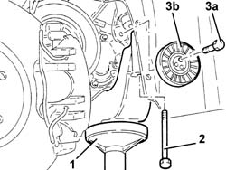
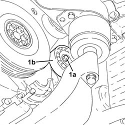

1092G40 cam belt tensioner - r r
- Path
- Procedures > 10 ENGINE > 1092 VARIOUS ENGINE COMPONENT CONTROLS > 1092G single drive belt for various engine components > 1092G40 cam belt tensioner - r r
- Kind
- repair procedure (removal / refitting; the operation number is the code)
- Applies to
- engines: 2.4 JTD 10v, 2.4 JTD 20v; all production periods
- Interactive page
- https://sloeber94.github.io/elrnDB-a156/en/#/3237853
Applies to: engines: 2.4 JTD 10v; all production periods
 Removing
Removing
 Refitting
Refitting4450B10 Front WHEEL (one) - R.R.
7055B64 Engine compartment DUST shield in front wheel arch (one), left or right - R.R.
1092G10 single engine belt r r
1. Position a hydraulic jack under the rigid power unit support, timing side.
2. Undo the bolt fixing the timing side rigid power unit support to the flexible mounting.
Lower the timing side rigid power unit support, as necessary, using the hydraulic jack.
3. Undo the bolt (3a) and remove the engine components single drive belt cam belt tensioner (3b).

Applies to: engines: 2.4 JTD 10v; all production periods
Refitting
RemovingFit the single drive belt cam tensioner and fix it using the bolt without tightening it.
Raise the timing side rigid power unit support using the hydraulic jack.
Tighten the bolt fixing the timing side rigid power unit support to the flexible mounting to the recommended torque.
 | Fastening | Component | Ø | Value (daNm) |
|---|---|---|---|---|
- | Bolt | ENGINE MOUNT TIMING SIDE | M12 | (Flexible mounting side) 7.5 - 9.2 |
Remove the hydraulic jack.
1092G10 single engine belt r r
7055B64 Engine compartment DUST shield in front wheel arch (one), left or right - R.R.
Applies to: engines: 2.4 JTD 20v; all production periods
Removing
RefittingPosition the vehicle on the ramp.
Proceed with removal 4450B04 right front wheel r r .
Proceed with removal 7055B54 under-engine guard - r r .
Proceed with removal - 7055B91 Right front WHEEL ARCH LINER - R.R. .
Proceed with removal - 7055B66 Engine compartment DUST SHIELD protection in right front wheel arch - R.R. .
Proceed with removal 1092G10 single engine belt r r .
1. Undo the bolt (1a) loosened previously and remove the single drive belt tensioner (1b).

Applies to: engines: 2.4 JTD 20v; all production periods
Refitting
RemovingPlace the engine components single drive belt tensioner back in its housing and fix it without tightening the bolt.
Proceed with refitting 1092G10 single engine belt r r .
Proceed with refitting - 7055B66 Engine compartment DUST SHIELD protection in right front wheel arch - R.R. .
Proceed with refitting - 7055B91 Right front WHEEL ARCH LINER - R.R. .
Proceed with refitting 7055B54 under-engine guard - r r .
Proceed with refitting 4450B04 right front wheel r r .
Remove the car from the ramps.